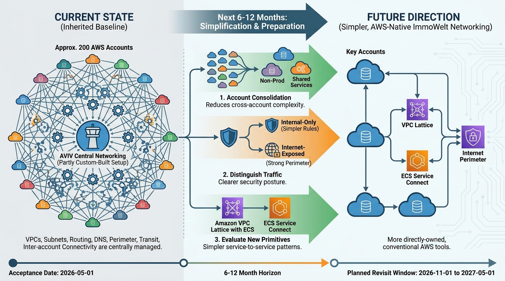

Infrastructure
AWS Networking: Inherit Central AVIV Group Tooling, Simplify Deliberately

Image generated by Google Gemini (gemini-3-pro-image-preview)
Infrastructure

Image generated by Google Gemini (gemini-3-pro-image-preview)